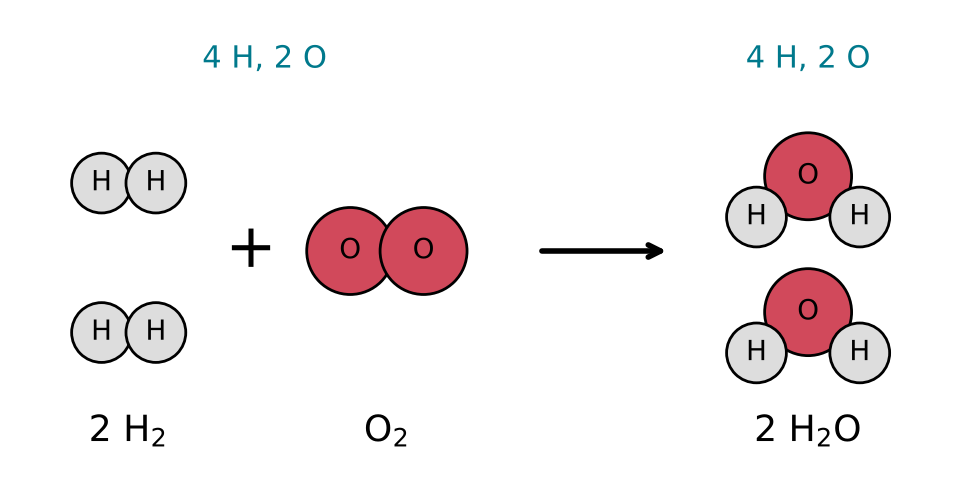
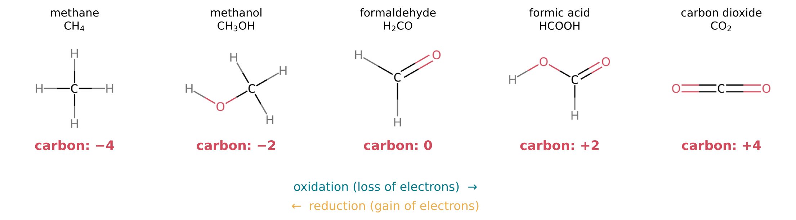
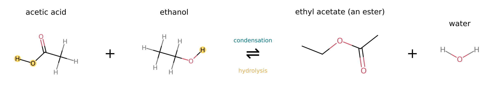

7 Chemical Reactions and Equations
The question of this chapter
When methane burns, it disappears, and carbon dioxide and water appear in its place. When iron rusts, a grey metal becomes a red-brown powder. In every such change, atoms are neither created nor destroyed; they are only rearranged into new combinations. This chapter asks: how is a chemical reaction described, and what kinds of reaction are there? It shows how reactions are written as balanced equations, how the amounts of substances in a reaction are calculated, and how most reactions in the chemistry of life fall into a few types: transfers of protons, transfers of electrons, and the joining and splitting of molecules with water.
7.1 What happens in a reaction
Reactants and products
A chemical reaction is a process in which substances are converted into different substances by the breaking and forming of chemical bonds. The substances present at the start are the reactants, and those formed are the products. In the burning of methane, the reactants are methane and oxygen and the products are carbon dioxide and water. The C–H bonds of methane and the O=O bonds of oxygen are broken, and new C=O and O–H bonds are formed.
A chemical reaction changes only the arrangement of electrons and the way atoms are bonded together. The nuclei are untouched, so every atom present among the reactants is still present among the products, as an atom of the same element. This distinguishes chemical reactions from the nuclear reactions of stars and radioactive decay, which change one element into another.
Conservation of mass
Because atoms are only rearranged, the total mass of the products equals the total mass of the reactants. This law of conservation of mass was established by careful weighing in the late eighteenth century, most influentially by Antoine Lavoisier (Wikipedia contributors, n.d.). It holds to the precision of any chemical balance. (According to relativity, the energy released in a reaction corresponds to a tiny loss of mass, but for chemical reactions it is far too small to measure by weighing.)
7.2 Chemical equations
Writing an equation
A reaction is written as a chemical equation, with the formulas of the reactants on the left, the formulas of the products on the right, and an arrow between them pointing from reactants to products. The formation of water from hydrogen and oxygen is written
\[ 2\,\mathrm{H_2} + \mathrm{O_2} \rightarrow 2\,\mathrm{H_2O} \]
The numbers in front of the formulas are called coefficients. They give the number of molecules (or moles) of each substance that take part. A coefficient of 1 is not written. The equation reads: two molecules of hydrogen react with one molecule of oxygen to give two molecules of water (Figure 7.1).

Balancing an equation
An equation is balanced when each side contains the same number of atoms of every element, and the same total charge. To balance an equation, change only the coefficients, never the subscripts in the formulas: changing a subscript would describe a different substance. The usual procedure is to balance first the elements that appear in only one substance on each side, and to leave hydrogen and oxygen, which often appear in several, until last.
As an example, consider the burning of methane. The unbalanced equation is
\[ \mathrm{CH_4} + \mathrm{O_2} \rightarrow \mathrm{CO_2} + \mathrm{H_2O} \]
Carbon is already balanced, with one atom on each side. Methane supplies four hydrogen atoms, so two molecules of water are needed: CH4 + O2 → CO2 + 2 H2O. The right side now contains 2 + 2 = 4 oxygen atoms, so two molecules of oxygen are needed on the left:
\[ \mathrm{CH_4} + 2\,\mathrm{O_2} \rightarrow \mathrm{CO_2} + 2\,\mathrm{H_2O} \]
A final count confirms one carbon, four hydrogen and four oxygen atoms on each side.
Equations involving ions must also balance charge. In the reaction of sodium with chlorine to give ions, Na + Cl → Na+ + Cl−, the total charge is zero on both sides.
State symbols
The physical state of each substance is often added in parentheses after its formula: (s) for solid, (l) for liquid, (g) for gas and (aq) for a substance dissolved in water (from the Latin aqua). Dissolving table salt is written
\[ \mathrm{NaCl(s)} \rightarrow \mathrm{Na^+(aq)} + \mathrm{Cl^-(aq)} \]
Arrows
Different arrows have different meanings, and they must not be confused.
- A single arrow, →, shows the direction of a reaction from reactants to products.
- A pair of half-arrows, \(\rightleftharpoons\), shows a reversible reaction: one that proceeds in both directions at once, and in which reactants and products coexist. Such a reaction reaches a state of balance, called equilibrium, described in Chapter 8. Strictly, every reaction is reversible; the single arrow is used when the reverse reaction is negligible.
- A double-headed arrow, \(\leftrightarrow\), does not denote a reaction at all. It connects two resonance structures of the same molecule (Chapter 4).
- Curved arrows, drawn on structures, show the movement of pairs of electrons during a reaction. They are used to describe reaction mechanisms, the step-by-step paths by which reactions occur (Chapter 11).
7.3 Amounts in reactions
Coefficients are ratios of moles
The coefficients of a balanced equation give the ratios in which molecules react. Since a mole is a fixed number of molecules (Chapter 6), they also give the ratios in moles. The equation CH4 + 2 O2 → CO2 + 2 H2O states that one mole of methane reacts with two moles of oxygen to give one mole of carbon dioxide and two moles of water. The calculation of amounts of reactants and products from a balanced equation is called stoichiometry (from the Greek stoicheion, element, and metron, measure).
A worked example
How much carbon dioxide and water are produced when 16.0 g of methane burns completely? The molar mass of methane is 12.011 + 4 × 1.0080 = 16.04 g mol−1, so 16.0 g is 0.998 mol, very nearly one mole. By the equation, this gives 0.998 mol of CO2 and 2 × 0.998 = 2.00 mol of H2O. With molar masses of 44.01 and 18.015 g mol−1, these are 43.9 g of carbon dioxide and 36.0 g of water.
The masses confirm conservation of mass. The reactants are 16.0 g of methane and 2 × 0.998 mol × 32.00 g mol−1 = 63.9 g of oxygen, a total of 79.9 g. The products are 43.9 g + 36.0 g = 79.9 g.
The limiting reactant
Reactants are rarely mixed in exactly the ratio of the equation. The reactant that runs out first is the limiting reactant; it determines how much product is formed, and the others are left over in excess. If 1 mol of methane is burned with only 1 mol of oxygen, oxygen is limiting: it can react with only 0.5 mol of methane, giving 0.5 mol of carbon dioxide and 1 mol of water, and 0.5 mol of methane remains. In the chemistry of the origin of life, the scarcest reactant, whether phosphate, a particular sugar or an energy-rich compound, often limits how much of a product can form, however abundant the others may be.
7.4 Transferring protons: acids and bases
Many reactions in water involve the transfer of a single proton, that is, a hydrogen ion H+, which is a hydrogen atom without its electron. An acid is a substance that donates a proton, and a base is a substance that accepts one. When hydrogen chloride dissolves in water, it donates its proton to a water molecule:
\[ \mathrm{HCl} + \mathrm{H_2O} \rightarrow \mathrm{H_3O^+} + \mathrm{Cl^-} \]
Here HCl is the acid and water is the base. The ion H3O+, a water molecule carrying an extra proton, is the hydronium ion. When ammonia dissolves in water, water acts as the acid and ammonia as the base:
\[ \mathrm{NH_3} + \mathrm{H_2O} \rightleftharpoons \mathrm{NH_4^+} + \mathrm{OH^-} \]
The products are the ammonium ion and the hydroxide ion. Water can act either as an acid or as a base, depending on its partner. Proton transfers are among the fastest of all reactions, and the balance between acids and bases in a solution is measured by its pH. Both are the subject of Chapter 8.
7.5 Transferring electrons: oxidation and reduction
Definitions
A second large class of reactions involves the transfer of electrons. Oxidation is the loss of electrons by an atom, ion or molecule, and reduction is the gain of electrons. The two always occur together, because electrons lost by one substance must be gained by another, and the combined process is called a redox reaction (from reduction and oxidation). The substance that gains electrons, and so causes the oxidation of its partner, is the oxidising agent; the substance that loses electrons is the reducing agent.
The reaction of sodium with chlorine is a redox reaction: each sodium atom loses an electron (it is oxidised) and each chlorine atom gains one (it is reduced). Another example, important in the geochemistry of the early Earth, is the oxidation of dissolved iron(II) ions, Fe2+, to iron(III), Fe3+, each by loss of one electron. Oxygen is a strong oxidising agent, and the word oxidation originally meant combination with oxygen; but many oxidations involve no oxygen at all.
Oxidation numbers
In reactions between molecules, electrons are often not transferred completely but shifted partly from one atom towards another. To keep track of such shifts, each atom is assigned an oxidation number (or oxidation state): the charge it would have if all its bonds were fully ionic, with the shared electrons of each bond given to the more electronegative atom (Chapter 5). For most purposes a few rules are enough.
- An atom in an element (H2, O2, N2, C as graphite) has oxidation number 0.
- Hydrogen bonded to a more electronegative atom, as in all compounds in this book, has +1. Oxygen usually has −2.
- The oxidation numbers of the atoms in a molecule add up to its charge: zero for a neutral molecule, and the charge of the ion for an ion.
An increase in oxidation number is oxidation, and a decrease is reduction.
A ladder of carbon compounds
The rules show that carbon can exist at many levels of oxidation. In methane, CH4, each hydrogen is +1, so carbon is −4. In methanol, CH3OH, three hydrogens on carbon (+3 in total), one oxygen (−2) and one hydrogen on oxygen (+1) leave carbon at −2. Continuing in this way gives the ladder of Figure 7.2: methane (−4), methanol (−2), formaldehyde, H2CO (0), formic acid, HCOOH (+2), and carbon dioxide, CO2 (+4). Each step up the ladder is an oxidation by two electrons, and each step down a reduction.

This ladder matters for the origin of life. The carbon of living matter lies mostly in the middle of the ladder, at oxidation numbers between −2 and +2, as in sugars, whose carbon atoms average 0. On the early Earth, much of the carbon was present as carbon dioxide, at the top. Making the building blocks of life from carbon dioxide therefore requires reduction: a supply of electrons from a reducing agent, such as hydrogen gas, iron(II) or the energy of sunlight. Whether the early atmosphere and oceans were reducing (rich in electron donors) or more oxidised is one of the long-standing questions of the field.
7.6 Joining and splitting with water
Condensation
A third type of reaction is central to the chemistry of life. In a condensation reaction, two molecules join to form a larger molecule, and a small molecule, usually water, is released. The reaction of an acid with an alcohol to form a compound called an ester is an example (Figure 7.3):
\[ \mathrm{CH_3COOH} + \mathrm{CH_3CH_2OH} \rightleftharpoons \mathrm{CH_3COOCH_2CH_3} + \mathrm{H_2O} \]
An OH group from the acid and an H atom from the alcohol leave together as water, and a new bond joins the remaining parts. The product, ethyl acetate, is an ester; Chapter 11 describes this and other groups formed by condensation.

The large molecules of life are all built by condensation. Proteins are chains of amino acids, each joined to the next by a condensation that releases water. RNA and DNA are chains of nucleotides, joined by condensations between phosphate groups and the hydroxy groups of sugars. Even the attachment of a nucleobase to a sugar is a condensation.
Hydrolysis
The reverse of condensation is hydrolysis (from the Greek for “splitting by water”): a reaction in which water breaks a bond, its H going to one fragment and its OH to the other. Ethyl acetate is hydrolysed back to acetic acid and ethanol; proteins are hydrolysed to amino acids, and RNA to its nucleotides.
Condensation and hydrolysis are a reversible pair, and in water, where water molecules are present at about 55 mol L−1 (Chapter 6), the balance usually lies on the side of hydrolysis. A chain of RNA dissolved in water is therefore always at risk of being cut by hydrolysis, and its building blocks do not join of their own accord. How chains could nevertheless have formed in water on the early Earth is one of the central problems of the origin of life. Chapters 8 and 9 explain why the large amount of water favours hydrolysis, and Chapter 12 returns to the question.
Addition
In an addition reaction, two molecules combine to form a single product, and no small molecule is released. Additions to double bonds are common. Water can add to the C=O double bond of formaldehyde, and hydrogen cyanide can add to it to form a larger molecule containing two carbon atoms:
\[ \mathrm{HCN} + \mathrm{H_2CO} \rightarrow \mathrm{HOCH_2CN} \]
Additions of this kind, which build new carbon-carbon bonds from small molecules such as hydrogen cyanide and formaldehyde, are thought to be among the first steps by which more complex organic molecules formed on the early Earth.
Key points
- A chemical reaction rearranges atoms by breaking and forming bonds; atoms of each element are conserved, and so is mass.
- A chemical equation lists reactants, an arrow, and products, with coefficients giving the number of molecules or moles. A balanced equation has the same number of atoms of each element, and the same charge, on both sides.
- → marks a reaction, \(\rightleftharpoons\) a reversible reaction, \(\leftrightarrow\) resonance (not a reaction). State symbols are (s), (l), (g), (aq).
- Coefficients are mole ratios. Stoichiometry converts between masses and amounts: 16 g of methane burns to 44 g of CO2 and 36 g of water. The limiting reactant determines the yield.
- Acid-base reactions transfer protons (H+). An acid donates a proton and a base accepts one; water can act as either.
- Redox reactions transfer electrons: oxidation is loss, reduction gain. Oxidation numbers track the shifts; carbon ranges from −4 in CH4 to +4 in CO2. Making biological molecules from CO2 requires reduction.
- Condensation joins two molecules and releases water; hydrolysis is the reverse. Proteins, RNA and DNA are built by condensation and broken by hydrolysis, which water favours.
- In an addition reaction, two molecules combine without losing any atoms.
Self-test
- Balance the equation for the burning of ethanol: C2H5OH + O2 → CO2 + H2O.
- How many grams of water are formed when 4.0 g of hydrogen gas reacts completely with oxygen?
- In the reaction NH3 + HCl → NH4+ + Cl−, which reactant is the acid and which the base?
- Find the oxidation number of carbon in carbon monoxide (CO) and of nitrogen in ammonia (NH3) and in nitrogen gas (N2).
- Glycine (H2NCH2COOH) and alanine (H2NCH(CH3)COOH) join by condensation, the amino group of one reacting with the carboxy group of the other. What small molecule is released, and what is the molecular formula of the product?